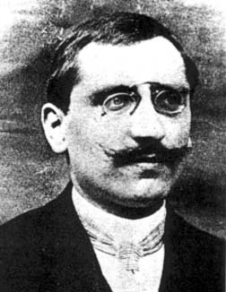

Henri Léon Lebesgue

28 June 1875 Beauvais, France - 26 July 1941 Paris, France
Henri Lebesgue studied at Ecole Normale Supérieure. He taught in the
Lycée at Nancy from 1899 to 1902. Building on the work of others, including that
of the French mathematicians Emile Borel and Camille Jordan,
Lebesgue formulated the theory of measure in 1901 and the following year he gave
the definition of the Lebesgue integral that generalises the notion of the Riemann
integral by extending the concept of the area below a curve to include many
discontinuous functions.
This is one of the achievements of modern analysis which greatly expands the scope of Fourier analysis. This outstanding piece of work appears in Lebesque's dissertation, Intégrale, longueur, aire, presented to the University of Nancy in 1902.
In addition to about 50 papers he wrote two major books Leçons sur l'intégration et la recherché des fonctions primitives (1904) and Leçons sur les séries trigonométriques (1906). He also made major contributions in other areas of mathematics, including topology, potential theory and analysis. In 1905 he gave a deep discussion of the various conditions Lipschitz and Jordan had used in order to ensure that f(x) is the sum of its series.
This is one of the achievements of modern analysis which greatly expands the scope of Fourier analysis. This outstanding piece of work appears in Lebesque's dissertation, Intégrale, longueur, aire, presented to the University of Nancy in 1902.
In addition to about 50 papers he wrote two major books Leçons sur l'intégration et la recherché des fonctions primitives (1904) and Leçons sur les séries trigonométriques (1906). He also made major contributions in other areas of mathematics, including topology, potential theory and analysis. In 1905 he gave a deep discussion of the various conditions Lipschitz and Jordan had used in order to ensure that f(x) is the sum of its series.
He was appointed to the Sorbonne in 1910 but he did not concentrate on the
field he had himself started. This was because his work was a stricking
generalisation, yet Lebesgue himself was fearful of generalisations. He wrote
Reduced to general theories, mathematics would be a beautiful form without content. It would quickly die.
Although future developments showed his fears to be groundless, they do allow us to understand the course his own work followed.
Article by: J J O'Connor and E F Robertson